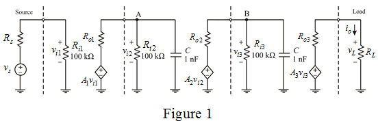

From Figure 1, consider  capacitor is larger than any parasitic capacitor at node B.
capacitor is larger than any parasitic capacitor at node B.
Calculate the upper 3-dB frequency at node B.
Therefore, the output resistance of second stage is .
Consider the circuit diagram.

From Figure 1, consider capacitor is larger than any parasitic capacitor at node A.
Calculate the upper 3-dB frequency at node A.
Therefore, the output resistance of first stage is .
From Figure 1, consider capacitor is larger than any parasitic capacitor at node B.
Calculate the upper 3-dB frequency at node B.
Therefore, the output resistance of second stage is .
Determine time constant due to capacitor a node B.
Determine the time constant due to capacitor a node A.
Write the expression for total time constant.

Calculate the upper 3-dB frequency at node B.
Determine the value of capacitance.
Therefore, the capacitance at node A and B is.